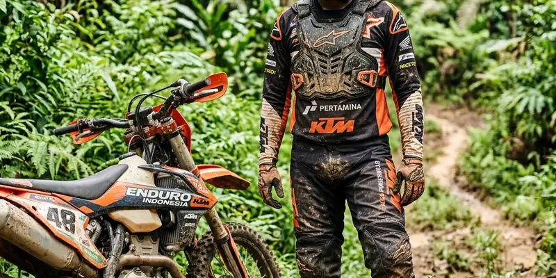

Perlengkapan wajib motor trail wisata mencakup apparel keselamatan seperti helm, goggle, jersey, protector, dan boot, yang umumnya sudah disediakan operator sebagai bagian dari paket perjalanan.
Ringkasan Inti
- Sebagian besar perlengkapan teknis motor trail wisata sudah disediakan operator dalam paket.
- Peserta tetap perlu menyiapkan perlengkapan pribadi seperti pakaian ganti dan obat-obatan.
- Asuransi perjalanan tambahan perlu dipertimbangkan karena tidak selalu termasuk dalam paket.
- Memahami fungsi setiap perlengkapan membantu peserta merasa lebih siap secara mental.
- Operator berpengalaman biasanya menjelaskan detail perlengkapan sebelum perjalanan dimulai.
Apa Saja Perlengkapan Wajib untuk Motor Trail Wisata
Perlengkapan wajib untuk motor trail wisata umumnya mencakup helm, goggle atau pelindung mata, jersey, protector tubuh, serta boot khusus yang dirancang untuk medan offroad.
Sebagian besar operator motor trail wisata sudah menyediakan perlengkapan ini sebagai bagian dari paket, sebagaimana contoh paket yang mencakup motor trail, apparel lengkap seperti helm, goggle, jersey, protector, dan boot, serta pendampingan leader selama perjalanan berlangsung. Dengan demikian, peserta tidak perlu membeli perlengkapan teknis secara mandiri sebelum mengikuti perjalanan.
Setiap perlengkapan memiliki fungsi spesifik, misalnya goggle melindungi mata dari debu dan pasir selama melintasi medan seperti lautan pasir Bromo, sementara protector tubuh membantu mengurangi risiko cedera apabila terjadi insiden kecil selama perjalanan.

Menggunakan setelan keselamatan yang tepat sangat krusial untuk melindungi diri sekaligus memberi rasa percaya diri selama berkendara.
Apa yang Biasanya Sudah Termasuk dalam Paket Operator Motor Trail
Paket operator motor trail wisata umumnya sudah mencakup unit motor trail, perlengkapan keselamatan lengkap, pendampingan pemandu, serta fasilitas pendukung seperti tiket masuk lokasi dan dokumentasi perjalanan.
Sebagai contoh, salah satu paket motor trail mencakup motor KLX 150 beserta bensin, apparel lengkap, leader, tiket, snack dan drink, serta dokumentasi video selama perjalanan berlangsung. Cakupan paket semacam ini memudahkan peserta karena tidak perlu mengurus logistik teknis secara terpisah.
Meski demikian, cakupan paket dapat bervariasi antar operator, sehingga peserta disarankan menanyakan detail secara spesifik sebelum melakukan pemesanan, terutama terkait jenis motor yang digunakan dan durasi perjalanan yang ditawarkan.
Apa Perlengkapan Pribadi yang Tetap Perlu Dibawa Peserta
Perlengkapan pribadi yang tetap perlu dibawa peserta meliputi pakaian ganti, obat-obatan pribadi, serta perlengkapan tambahan sesuai kebutuhan kesehatan masing-masing individu.
Beberapa paket motor trail wisata secara eksplisit menyebutkan bahwa paket tidak termasuk asuransi, obat-obatan dan perlengkapan pribadi, sehingga peserta perlu mempersiapkan hal ini secara mandiri sebelum keberangkatan. Memahami cakupan paket sejak awal membantu menghindari kebingungan saat hari pelaksanaan tiba.
Selain itu, peserta juga disarankan membawa perbekalan ringan seperti air minum tambahan dan tabir surya, mengingat perjalanan motor trail sering melewati area terbuka yang terpapar sinar matahari cukup lama, terutama saat melintasi kawasan lautan pasir.
Apakah Perlu Membawa Asuransi Perjalanan Tambahan
Membawa asuransi perjalanan tambahan disarankan karena tidak semua paket motor trail wisata secara otomatis menyertakan perlindungan asuransi bagi peserta selama kegiatan berlangsung.
Karena aktivitas offroad motor memiliki risiko fisik tertentu, memiliki perlindungan asuransi tambahan dapat memberi rasa aman lebih bagi peserta, terutama bagi yang belum memiliki pengalaman offroad sebelumnya. Informasi mengenai cakupan asuransi sebaiknya ditanyakan langsung kepada operator sebelum melakukan pemesanan.
Peserta juga dapat mempertimbangkan asuransi perjalanan pribadi yang mencakup aktivitas petualangan, sebagai langkah antisipasi tambahan di luar cakupan paket yang disediakan operator motor trail wisata.
Kesimpulan
Mempersiapkan perlengkapan yang tepat menjadi kunci penting sebelum mengikuti motor trail wisata, baik yang sudah disediakan operator maupun yang perlu dibawa sendiri oleh peserta. Dengan memahami cakupan paket secara jelas dan mempersiapkan kebutuhan pribadi tambahan, peserta dapat menikmati pengalaman offroad motor dengan lebih nyaman dan aman.
FAQ
Sebagian besar operator menyediakan apparel lengkap, namun cakupannya dapat bervariasi sehingga sebaiknya dikonfirmasi terlebih dahulu.
Boleh, dan beberapa peserta yang sudah memiliki perlengkapan pribadi terkadang memilih membawa sendiri demi kenyamanan tambahan.
Tidak ada persyaratan khusus secara umum, namun peserta dengan kondisi kesehatan tertentu disarankan berkonsultasi dengan dokter sebelum mengikuti aktivitas fisik seperti motor trail.